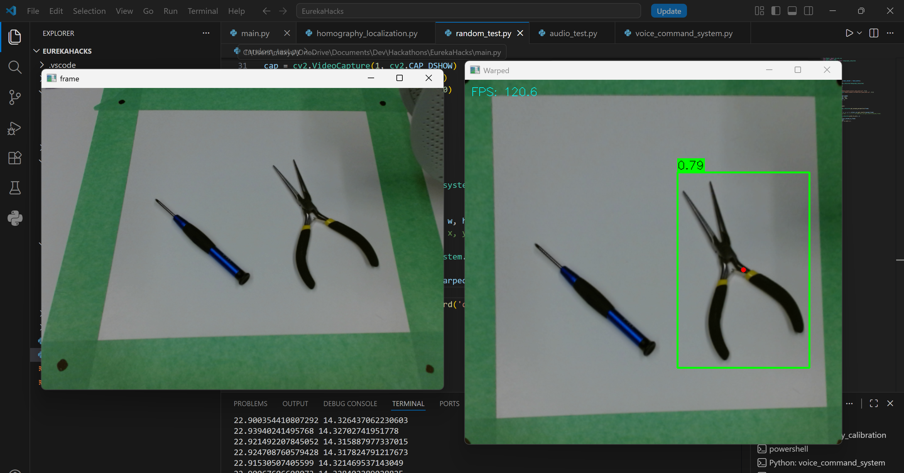

RICO, a robotic arm that fetches tools when you ask
Inverse kinematicsYOLOv8OpenCVGroq LLMPython
Portrait

Demonstration

What it is
A natural language request is sent to a Groq LLM which outputs a series of actions that help the robot accomplish the requested task. At the same time, an OpenCV pipeline runs and on each frame computes a homography transformation to produce a bird's-eye view. When an object is detected using a trained YOLOv8 model, the detection coordinates are multiplied by the transformation matrix to get the object's position in workspace coordinates. That position is then fed into an inverse kinematics calculator, which the arm uses to reach and grasp the object.
How the pipeline runs
Speech goes to a Groq-hosted language model, which parses the natural language into a structured action rather than trying to control the arm directly. That keeps the model in the role it is actually good at, turning ambiguous human phrasing into a specific target, and leaves motion planning to code that is deterministic.
A fine-tuned YOLOv8 model then locates the requested tool in the camera frame, and inverse kinematics solves the joint angles needed to reach it.
Detections live in pixel space and the arm lives in millimetres. A bounding box centre at pixel (412, 260) means nothing to an IK solver.
I used a homography transform to map the camera plane onto the workspace plane, which turns any detection into a real coordinate on the bench that the solver can reach for. This is the piece that makes the whole thing work with tools placed anywhere, rather than at memorised positions.
Homography examples

Result
Voice command to grasp, with no fixed tool positions and no per-tool calibration. Built and demonstrated inside a hackathon weekend.